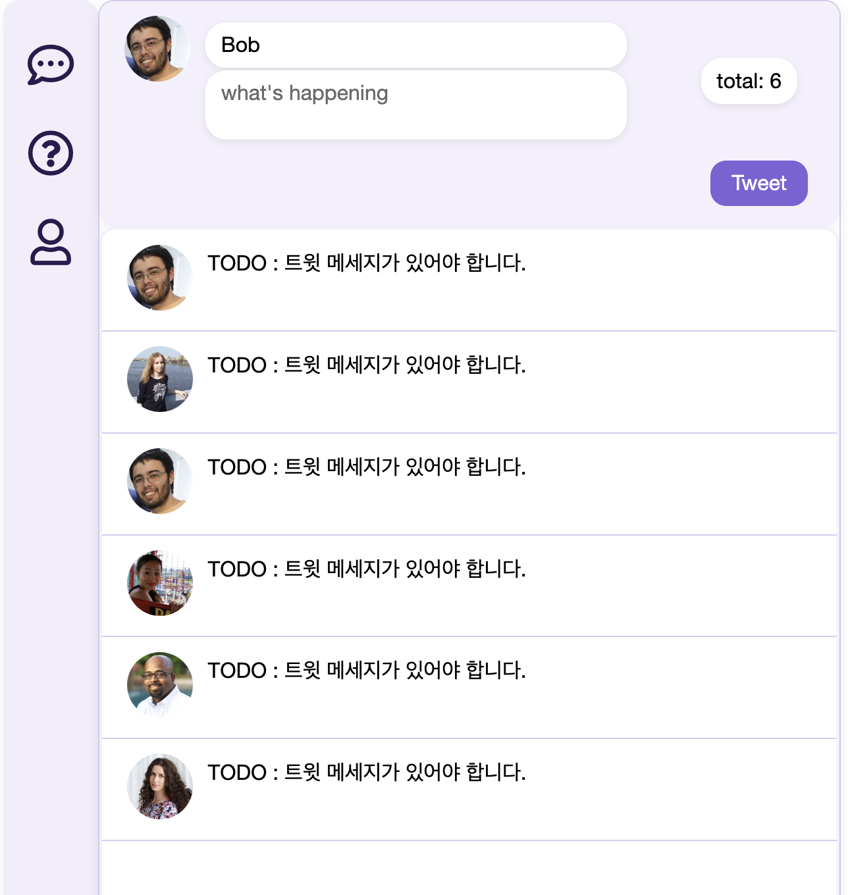

오늘은 React의 핵심 개념인 state와 props에 대해 배웠다. 이 개념은 아직 익숙하진 않지만, 컴포넌트 간 데이터 전달과 상태 변경에 있어서 매우 중요한 개념이다.
1. state란?
State는 컴포넌트 내에서 관리되는 동적인 데이터이다. 상태가 변경되면 해당 컴포넌트는 자동으로 리렌더링된다.
- 변경 가능한 값
- 컴포넌트 안에서 정의
- 변경되면 자동으로 화면 업데이트
2. props란?
Props는 부모 컴포넌트가 자식 컴포넌트에게 전달하는 읽기 전용 데이터이다. 직접 변경할 수 없으며, 변경하려면 부모에서 값을 바꿔야 한다.
- 부모 → 자식으로 전달
- 읽기 전용
- JSX 속성 형태로 전달
📦 props 전달 3단계
- 부모 컴포넌트에서 전달할 값 정의
- JSX로 props를 자식에게 전달
- 자식 컴포넌트에서 props를 받아 렌더링
3. 이벤트 핸들링
React에서도 DOM과 비슷하게 이벤트를 처리하지만, camelCase로 작성하며, 함수를 직접 전달한다는 차이가 있다.
<button onClick={handleClick}>클릭하세요</button>
이벤트를 통해 상태(state)를 변경하고, 그에 따라 화면이 갱신된다.
4. React의 데이터 흐름
React는 단방향 데이터 흐름(one-way data flow)을 가진다. 즉, 데이터는 항상 부모에서 자식으로 흐른다. 자식 컴포넌트는 props를 통해 전달받을 뿐 직접 변경할 수 없다.
5. 실습: 트윗 기능 추가
지난 시간에 만든 트위터 클론에 트윗을 올리는 기능을 추가했다. 입력창에 값을 입력하고 버튼을 누르면 트윗이 추가되고, 자동으로 화면에 렌더링된다.
🖼️ 결과 이미지
▲ props와 state를 이용해 트윗 추가 기능 구현
6. 일부 코드 구성
import React from 'react';
import { BrowserRouter, Routes, Route } from 'react-router-dom';
import Sidebar from './Sidebar';
import Tweets from './Pages/Tweets';
import MyPage from './Pages/MyPage';
import About from './Pages/About';
const App = () => {
return (
<BrowserRouter>
<div className="App">
<main>
<Sidebar />
<section className="features">
<Routes>
<Route path="/" element={state와 props의 차이를 이해하는 게 어려웠다. 특히 "props는 부모 → 자식만 가능하다"는 단방향 흐름과, state는 "컴포넌트 내부에서만 변경 가능하다"는 개념이 헷갈린다ㅠ